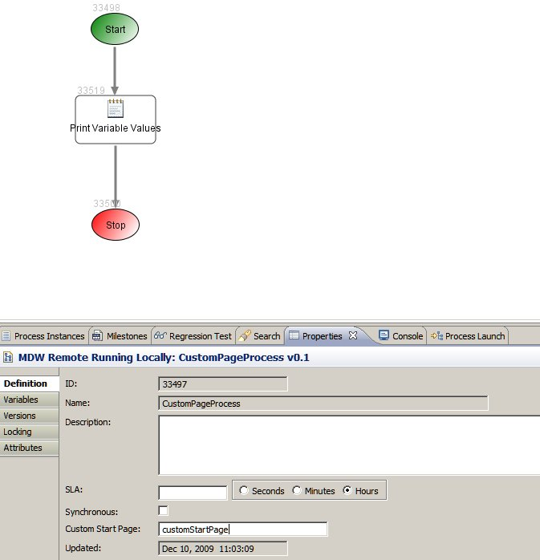

Custom Web
In your workflow you can create individual web pages or an entire custom webapp to supplement or replace standard MDWHub.
Using Eclipse Designer you can create custom pages, templates, stylesheets, images, etc. through the workflow asset wizards.
Individual Pages
Individual custom pages are commonly associated with a manual task for data entry, or used to start a process.
To create a new custom page in Designer, right-click on your workflow package in Process Explorer and select New > Page.
For the page type choose Facelet. The new page will open in the editor you have configured in Eclipse for the selected page type.
To associate a custom page with a manual task in your workflow, select it in the dropdown on the Design property tab for the manual task
activity (Note: to use a custom page you must choose the Custom Manual Task implementor in the Toolbox view).
Customizing MDWHub
The easiest way to get started overriding MDWHub is to create your own workflow package called, by convention, MDWHub.
Then every web resource you locate under this package takes precedence over the corresponding standard resource.
There are a number of examples of custom web assets in the mdw-demo GitHub repository:
https://github.com/CenturyLinkCloud/mdw-demo (user/password are not required to clone this project).
In the mdw-demo project the MDWHub standard resources are located under deploy/webapps/mdw, and the corresponding overrides are
under the MDWHub, MDWHub.layout, MDWHub.images, etc workflow packages. If you've created your own project,
you can refer to the MDWHub standard resources under deploy/webapps/mdw.
Process Variables
Your custom page can refer to process variables using MDW's Java EL Binding syntax.
Here are some examples of how this works:
- Reference a process variable:
<t:inputText id="firstNameInput"
value="#{process.variables['firstName']}" />
- Reference an element within a document-type XML variable:
<h:inputText id="customerInput"
value="#{process.variables['serviceConfigDoc']['/ServiceAttributes/customer']}" />
- Reference a getter method on a java.lang.Object document variable:
<h:inputText id="objectVarInput"
value="#{process.variables['userVO'].userName}" />
- Escape inner quotes when testing for element or attribute values:
<h:inputText id="customerInput"
value="#{process.variables['deviceView']['DeviceView/JobInfo/User[Role=\'FiberEngineer\']/Name']}" />
- Qualify XPath expressions when a document variable contains a namespace:
<h:inputText id="customerInput"
value="#{process.variables['responseXmlBean']['/ser:ActionRequest/Action/Parameter[1]']}" />
Here responseXmlBean is of type org.apache.xmlbeans.XmlObject and the content of the Bean looks like this
<ser:ActionRequest xmlns:ser="http://mdw.qwest.com/services">
<Action>
<Parameter name="foregroundColor">black</Parameter>
<Parameter name="backgroundColor">white</Parameter>
</Action>
</ser:ActionRequest>
For document-type XML variables, the syntax for referencing elements within the document is XPath.
For all variable types, when you assign a value expression, the field is initially populated on the page with the corresponding process variable value,
and when the form is submitted the values are saved back to the process (but see the note below on Updating java.lang.Object Process Variables).
Web Resources
You can reference file system resources (such as page templates, stylesheets and images) just as you usually would in your Facelet or JSP.
However, you can also use custom versions of these resources as well.
To create a custom page template, use the new page wizard to create another Facelet (Note: do not use the New Template wizard, as this will create a Velocity template which is used for a different purpose).
To create custom CSS, JavaScript or Image resources, right click on the package and select New > Web Resource.
These custom resources are referenced using a special syntax in your page. Here are some examples:
- Reference a custom page template:
<ui:composition template="/template.xhtml?templateName=CustomWeb/customPageTemplate.xhtml" />
- Reference a custom image:
<img src="/resources/CustomWeb/mdw.png" alt="MDW" />
- Reference a custom CSS stylesheet:
<link rel="stylesheet" href="resources/CustomWeb/dons.css" />
- Reference a custom JavaScript asset:
<mdw:javascriptInclude fileLocation="/resources/DonsTests/myCustomScript.js" />
- Include Facelets content from an asset:
<ui:include src="resources/CustomWeb/donsFooter.xhtml" />
Accessing Custom Pages
If you've configured a Custom Page on the Design tab for a Manual Task activity, then any access to the task detail will automatically be directed to your custom page.
Otherwise, custom pages can be accessed directly through a special URL format like the following:
http://localhost:8080/mdw/page.jsf?pageName=myCustomPage
Pages and other resources are cached on the server, but during development you'll probably want to test your changes iteratively. In this case you can force a refresh by appending the "refresh" parameter to your URL:
http://localhost:8080/mdw/page.jsf?pageName=myCustomPage&refresh=true
In MDW Designer, if you right-click on a page in Process Explorer view, the Run... option will automatically launch the page with refresh=true.
Navigation Outcomes
Just as in regular JSF pages, navigation outcomes in your custom pages are specified by associating an action attribute with your command elements.
Here's an example of how to direct flow after a user action is performed:
<t:commandButton id="myActionButton"
value="Go To User Access Request Page"
action="nav.xhtml?toPage=WebPages/userAccessRequestPage.xhtml"/>
The "toPage" parameter can be set to either a custom page or a pre-existing built-in MDWHub page.
By default, MDWHub will dynamically generate a start page for each process with fields for each process input variable.
The URL for this page is like this:
http://localhost:8080/mdw/start.jsf?process=MyPackage/MyProcess
The field labels and display sequence for this generic process start page can be set on the Variables tab of the process properties.
Alternatively, a process can be configured to use your custom page to trigger a process instance launch.
In this scenario, you can use the syntax described above to populate process input variables with user-entered values.
To tell MDW to use a custom page, specify the page name on the Definition tab of the process properties:

The URL to launch the process is the same as above, but the browser will be redirected to your custom launch page.
The MDW Expression Language Resolver needs to know which process variable values have been updated during a page submittal so
that it can persist the appropriate variable values to the database. However, to indicate to MDW
that a Java Object variable value should be updated, you'll need to include a flag like the following within the form that
can potentially affect the variable value:
<h:inputHidden value="#{process.dirtyFlag['device']}" />